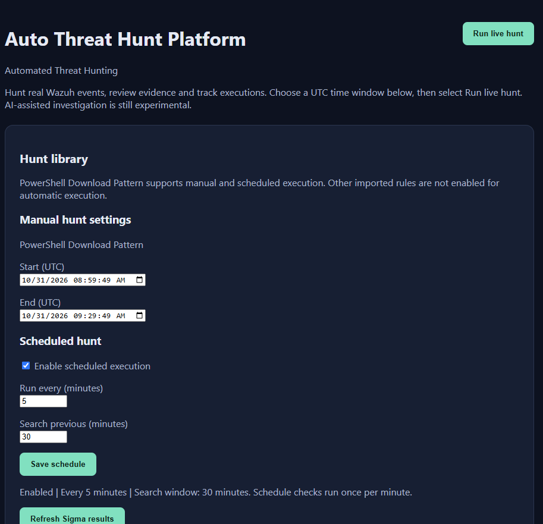

Auto Threat Hunt Platform
Demo versionAutomated threat hunting built on top of Wazuh. The platform connects to a live SIEM and turns raw events into repeatable, trackable hunts, with an experimental AI agent that helps with investigation and reporting.
- Hunts against real Wazuh events
- Manual hunts with a custom UTC time window
- Scheduled hunts with configurable interval and lookback
- Sigma rules imported, with hunts enabled one by one after testing
- Experimental AI-assisted analysis and reports

From a Wazuh alert to an investigation
I promised to document the process behind Auto Threat Hunt as it evolves. The first demo showed how to run hunts manually or on a schedule. For this update, I started with the questions I usually ask when a SIEM alert comes in. What else ran on that host? What launched it? Which network connections were recorded around the same time?
In the Alert Investigation demo, I select a Wazuh alert and run a predefined set of queries on the device identified in that alert. ATH checks process activity and network connections within 15 minutes before and after the alert. When a process GUID is available, ATH highlights events linked to that process so I can distinguish them from other activity on the same host.


I kept this version simple on purpose to show the workflow from alert selection to evidence review. The results view still needs work. I want the fields that matter for each check to be visible at a glance, with raw logs available on demand. I also need to define which Wazuh rules are in scope, which queries make sense for each alert type, and whether the investigation window should vary by alert type.
The Hunt Library continues to grow alongside the investigation demo. It includes Sigma rules, MITRE CAR analytics, and hunts for previously unseen process and parent combinations and for failed logons followed by a success.


Next, I want to hunt for the execution of tools that are unapproved in a given environment and may fall outside existing SIEM rule coverage. Checks for scheduled tasks and startup registry changes will follow as I validate the telemetry.
I’ll keep sharing new hunts and anonymized results here as the platform evolves.